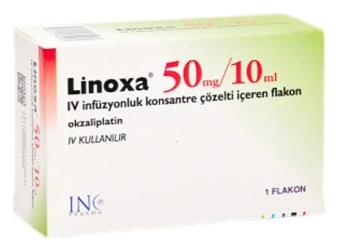

Linoxa 50 mg/10 ml IV İnfüzyonluk Konsantre Çözelti İçeren Flakon, 1 Adet

Ne için kullanılır
KT · Bölüm 1• LİNOXA, berrak renksiz sıvı şeklindedir, sulandırılarak çözelti haline getirilir ve damar yoluyla kullanılır. • LİNOXA, okzaliplatin etkin maddesi içerir. 10 ml çözelti içinde 50 mg etkin madde bulunur. Kutunun içinde 1 adet 10 ml’lik cam flakon bulunur. • LİNOXA, kanser tedavisinde kullanılan antineoplastik (antikanser) bir ilaçtır ve platin içerir. • Doktorunuz size LİNOXA’yı, kalın bağırsak kanserinde (birincil tümör vücudunuzdan tamamen çıkarıldıktan sonra) veya vücudun diğer kısımlarına dağılmış kalın bağırsak ve kalın bağırsağın aşağı bölümü (rektum) kanserinin tedavisi için reçetelemiş olabilir. • LİNOXA, 5- fluorourasil ve folinik asit, bevasizumab, kapesitabin adlı başka kanser ilaçlarıyla birlikte uygulanır.